Les Étapes de Création
Scénario & Préproduction
Développement des idées à partir du thème du Festival : "Ici t'attend l'extraordinaire", écriture de scénarios, sélection des plus réalisables sous nos différentes contraintes.
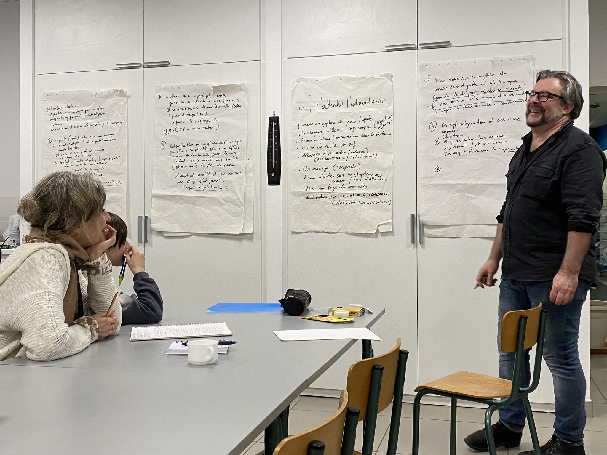
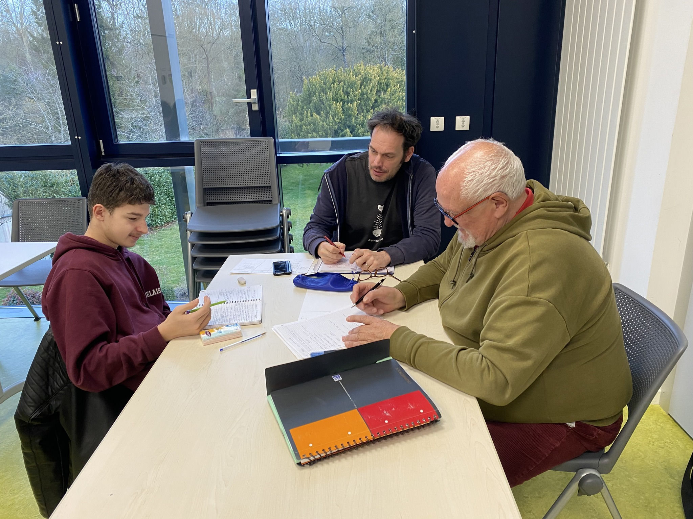
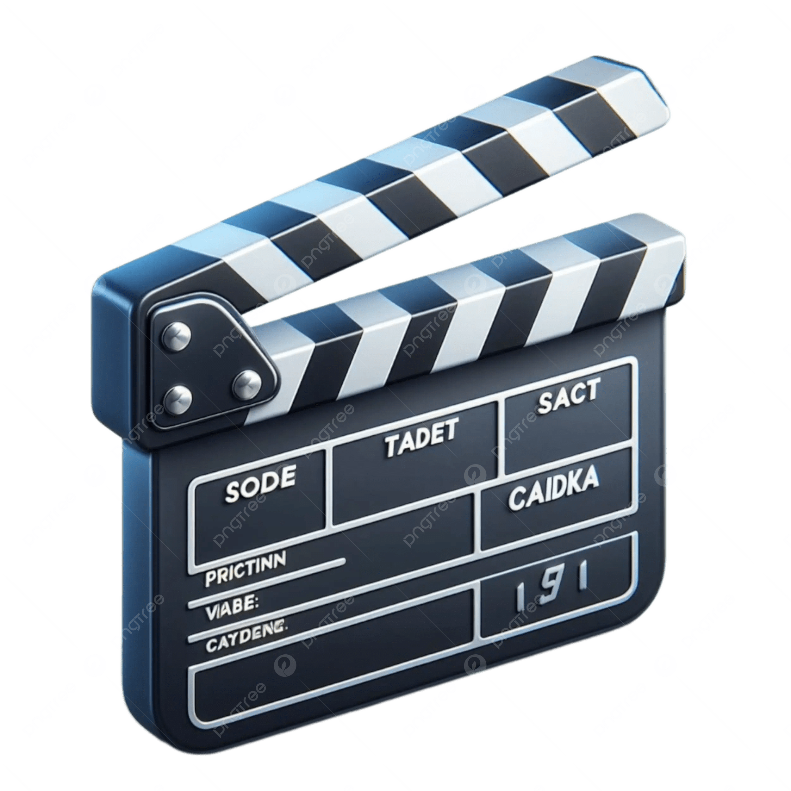
Initiation au Tournage & Montage
Apprentissage des techniques et règles de base du cinéma, du cadrage, du tournage et du montage.
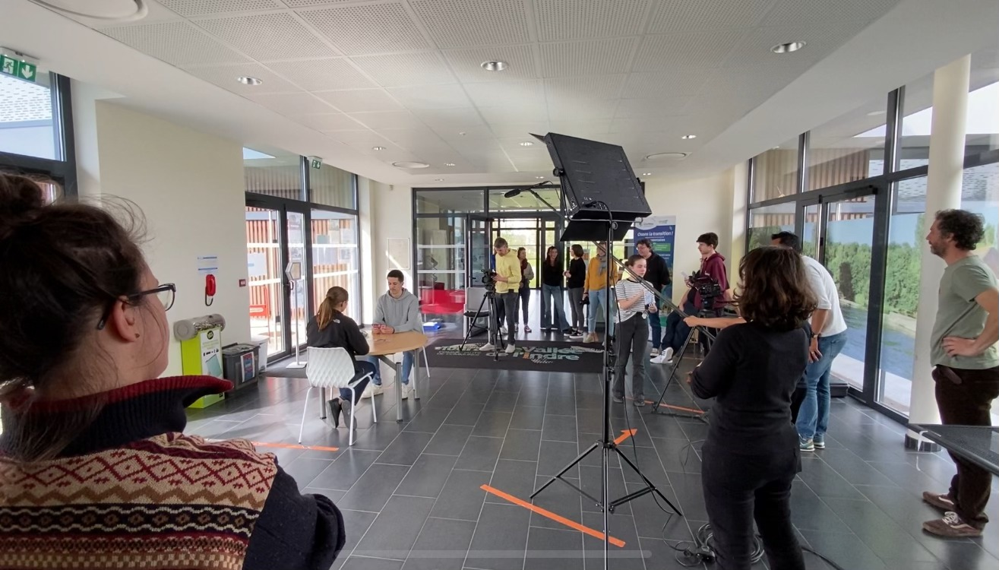
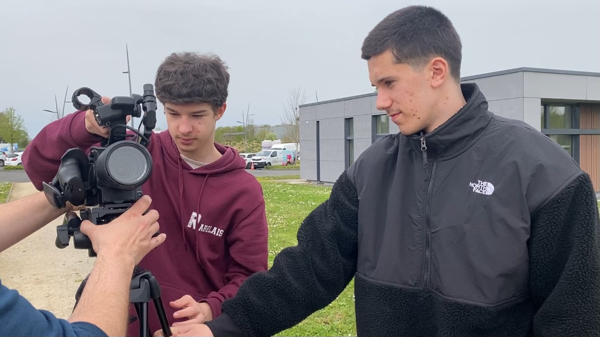
Tournage
Tournage entier d'un scénario en petite équipe, condensé en un week-end.
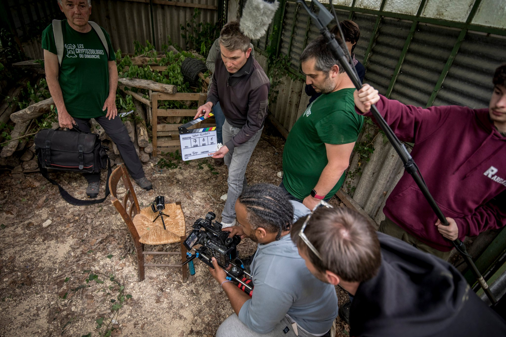
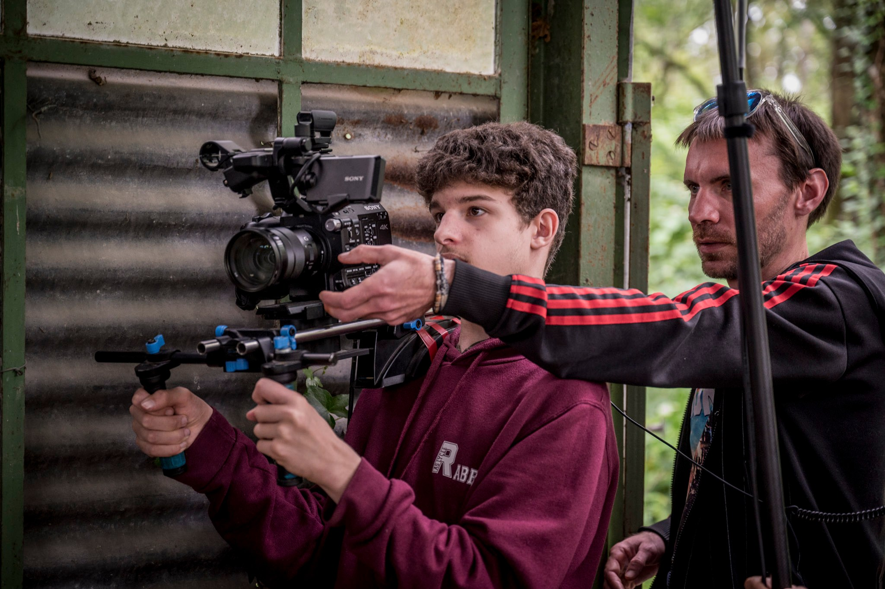
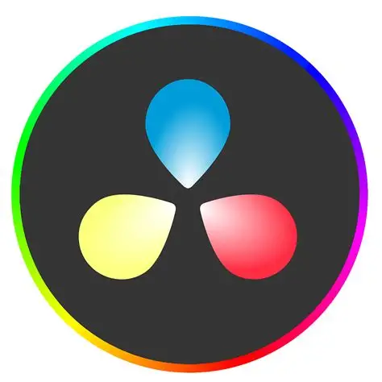
Post-Production, Montage & Mixage
Montage vidéo, étalonnage des couleurs, ajout des effets spéciaux et synchronisation audio.
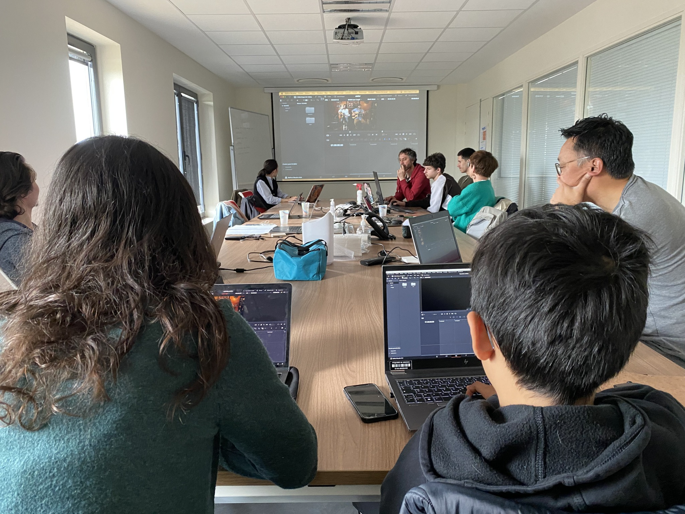
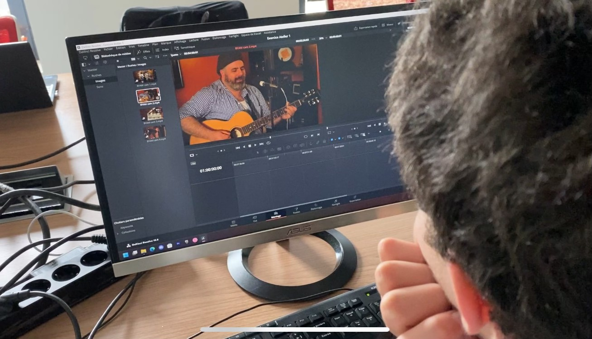
Projection
Les films sous leurs formes finales sont projetés sur grand écran dans la salle des fêtes d'Artannes sur Indre, puis plus tard au cinéma "Le Générique" de Montbazon.
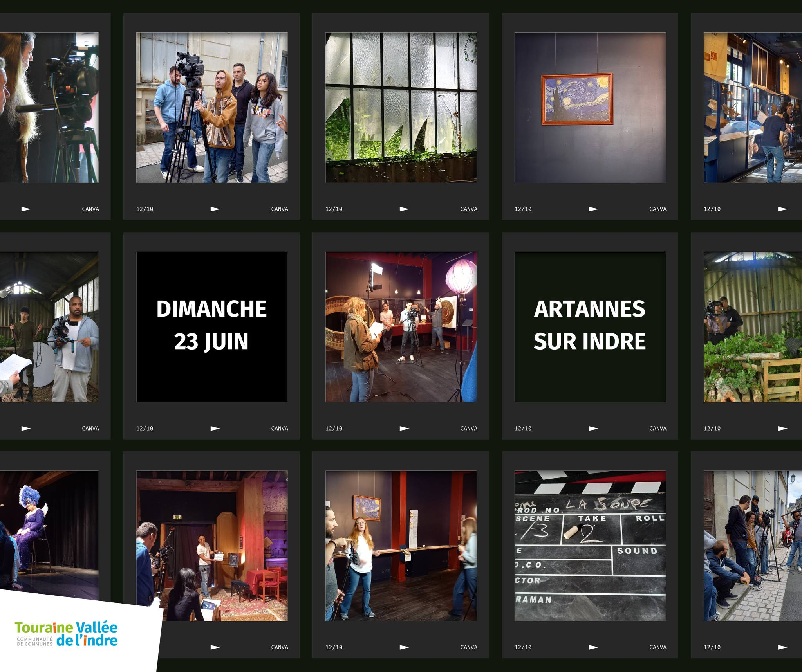